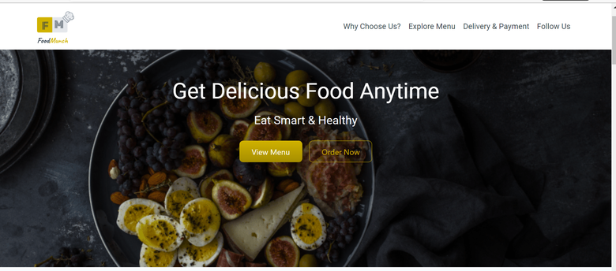

Hey! This is
SAKARE UDAYKUMAR
Front-end Developer
About Us
Web Developer
I am a front-end web developer.I can provide clean code and perfect design.I also make the website more & more interactive with web animation.A responsive design makes your website accessible to all users,regardless of their devices.
Technical Skills
Html,Css,Bootstrap,JavaScript,React js
Food munch Application
Food Munch is a responsive website designed to showcase a variety of food items, their detailed information, and special offers. The website is built using a mobile-first approach, ensuring that it looks and functions seamlessly on both desktop and mobile devices. It utilizes HTML structure elements such as li, header, article, and footer, along with different Bootstrap components and classes for responsiveness.
Technologies: Html,Css,Bootstrap
Wikipedia Search Application

Wikipedia is a free online encyclopedia with articles written by volunteers who write without pay. It covers a wide range of topics and is available in multiple languages. Users can access Wikipedia through a web browser on their computers or by using dedicated applications on mobile devices.
Technologies: Html,Css,JavaScript,Api
Todos Application

A "Todos" application, short for a "to-do list" application, is a software tool designed to help users organize, manage, and keep track of their tasks and activities. These applications are widely used to enhance productivity and time management by providing a centralized platform for creating, prioritizing, and completing tasks.